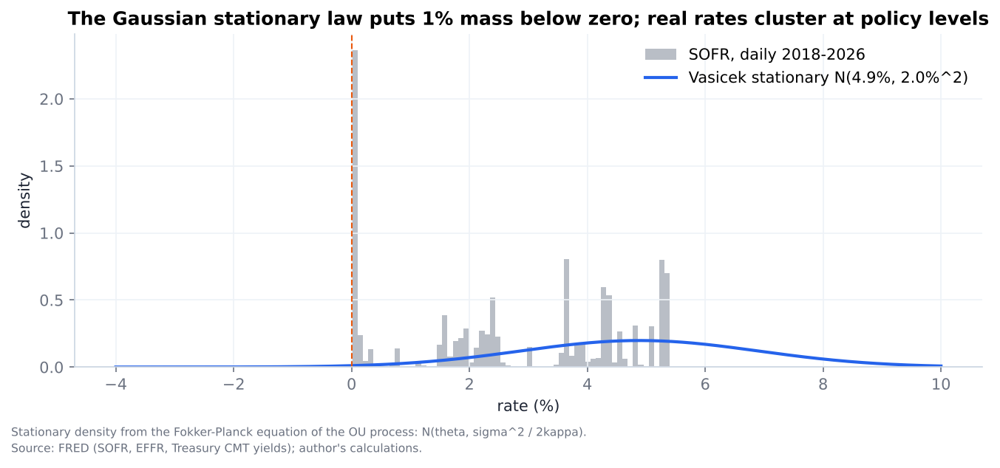
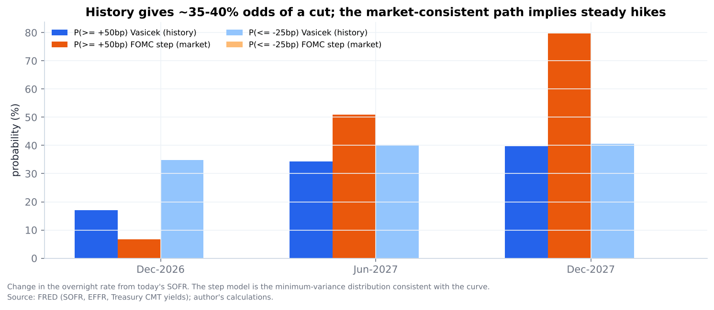
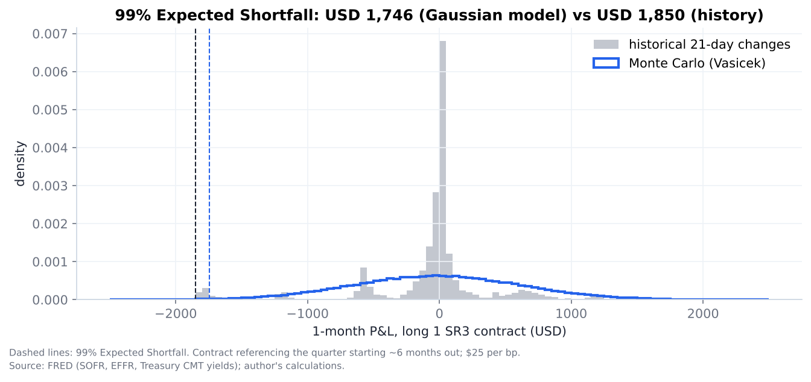

Monte Carlo Simulation of US Short-Rate Paths
Short-rate models (Vasicek / Ornstein-Uhlenbeck, CIR, Hull-White) calibrated to SOFR history and to today's curve; Monte Carlo convergence and variance reduction; FOMC scenario probabilities, option pricing, futures convexity and VaR. Data as of 2026-10-22.
1. Calibration to SOFR history (2018-2026)
OLS on the AR(1) form and exact maximum likelihood give identical Vasicek estimates, as theory says. Volatility is pinned down precisely (95 bp per sqrt-year), but mean reversion is not: kappa = 0.11 with a standard error of 0.17, so the 95% interval includes zero. Daily rates move in FOMC steps, so history alone says little about the pull back to a long-run level. Keeping the two repo-spike days inflates sigma to 166 bp. CIR fits better (log-likelihood +44) because volatility scales with the rate level.
| model | kappa | theta (%) | sigma (%/sqrt yr) | se_kappa | se theta (%) | se sigma (%) | loglik |
|---|---|---|---|---|---|---|---|
| Vasicek (OLS on AR(1)) | 0.1116 | 4.882 | 0.9522 | – | – | – | – |
| Vasicek (exact MLE) | 0.1116 | 4.882 | 0.9518 | 0.1703 | 4.443 | 0.0146 | 12,817 |
| Vasicek MLE, spikes kept | 0.3636 | 3.367 | 1.663 | – | – | – | 11,627 |
| CIR (exact MLE) | 0.0584 | 6.872 | 8.758 | – | – | – | 12,862 |
2. Rolling calibration (EFFR, 2-year windows)
Volatility and mean reversion change with the policy regime, with 95% confidence bands. A single historical calibration is not a stable description of rates.
Stationary distribution vs SOFR history
The Fokker-Planck stationary law of the OU process, N(theta, sigma^2/2kappa), against the empirical distribution of SOFR. Real rates cluster at policy levels; the Gaussian puts 0.8% probability below zero.

3. Monte Carlo convergence and variance reduction
Standard error of the simulated 2-year bond price against the closed form (0.923176). Plain Monte Carlo follows the 1/sqrt(N) law (slope -0.50). Antithetic variates reduce variance 4,929x and the control variate (the integral of r, whose mean is known) 9,685x at the same N.
4. Discretisation error
Euler's bias in the OU mean shrinks in proportion to the time step (order 0.95). For CIR, the strong error of Milstein falls with order 1.07 against 0.65 for Euler.
5. Fan chart: simulated short-rate paths
Blue: Vasicek calibrated to history (5-95% and 25-75% bands). Orange: FOMC step model whose meeting probabilities reproduce the market's forward path. Black: the forward path itself.
6. Scenario probabilities: history-based model vs market-implied steps
Probability that the overnight rate is at least 25bp / 50bp higher, or 25bp lower, than today at each horizon.
| horizon | model | p_hike_25plus | p_hike_50plus | p_cut_25plus | mean_change_bp | sd_bp |
|---|---|---|---|---|---|---|
| Dec-2026 | Vasicek (history) | 0.385 | 0.17 | 0.349 | 1.941 | 37.34 |
| Dec-2026 | FOMC step (market) | 0.777 | 0.068 | 0 | 21.09 | 13.25 |
| Jun-2027 | Vasicek (history) | 0.468 | 0.343 | 0.402 | 7.015 | 75.88 |
| Jun-2027 | FOMC step (market) | 0.902 | 0.509 | 0 | 39.96 | 23.5 |
| Dec-2027 | Vasicek (history) | 0.496 | 0.397 | 0.406 | 11.74 | 97.61 |
| Dec-2027 | FOMC step (market) | 0.966 | 0.797 | 0 | 63.78 | 31.66 |
Scenario probabilities chart
Probability of at least +50bp, or at least a 25bp cut, by horizon.

7. Futures convexity adjustment
Futures rates sit above forward rates because futures are margined daily. Hull-White formula (bars) and Monte Carlo checks (orange, 95% CI).
8. One-month VaR and Expected Shortfall (long 1 SR3 contract, USD)
Parametric Monte Carlo under Vasicek vs historical simulation of 21-day SOFR changes.
| method | VaR95 | ES95 | VaR99 | ES99 |
|---|---|---|---|---|
| Monte Carlo (Vasicek) | 1,077 | 1,351 | 1,525 | 1,746 |
| Historical (2018-2026) | 1,177 | 1,654 | 1,812 | 1,850 |
P&L distribution
Historical 21-day changes are peaked with fat tails; dashed lines mark 99% Expected Shortfall.
